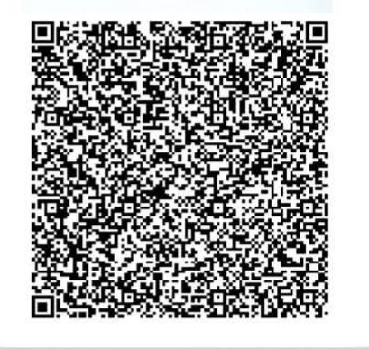

Atelier Electronique Médenine
🌼 10+ سنوات خبرة
تحميل الأخبار...
--:--:--
عدد زياراتك: 0
تبديل اللغة
📱 امسح للوصول السريع

📞 تواصل معنا واتساب
🗺️ شوفنا على Google Maps
📷 شوف الصور
🎞️ شوف الفيديو
📻 شغّل الراديو
🛠️ خدمات الورشة
الأسئلة الشائعة
كيف يمكنني إرسال جهاز للإصلاح؟
يمكنك إرسال الجهاز عبر البريد إلى عنوان الورشة أو التواصل معنا لترتيب خدمة الاستلام.
ما هي مدة التصليح المعتادة؟
مدة التصليح تختلف حسب نوع العطل، لكن غالباً لا تتجاوز 3 أيام عمل.
هل توفرون قطع غيار أصلية؟
نعم، نوفر قطع غيار أصلية وذات جودة عالية لجميع الأجهزة.
كيف أتابع حالة الإصلاح؟
نقوم بإرسال صور وفيديوهات لحالة الجهاز أثناء مراحل التصليح عبر واتساب.